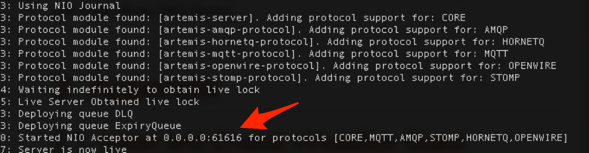

Configuring AMQ 7
In this lab, we'll take a look at the AMQ7 configuration files and some basic configuration options and things to be aware of. For more specific configurations (like persistence, clustering, etc) we'll dig into those in later labs.
If we navigate back to our brokers/myfirstbroker installation that we created in the previous lab we can examine our configuration. AMQ7 configuration is stored in eth etc/ folder. If we do a listing of the etc/ folder we should see something similar to the following:
$ cd brokers/myfirstbroker
$ ls -l ./etc/
total 64
-rw-r--r-- 1 ceposta staff 961B May 10 13:58 artemis-roles.properties
-rw-r--r-- 1 ceposta staff 1.1K May 10 13:58 artemis-users.properties
-rw-r--r-- 1 ceposta staff 2.0K May 10 13:58 artemis.profile
-rw-r--r-- 1 ceposta staff 1.6K May 10 13:58 bootstrap.xml
-rw-r--r-- 1 ceposta staff 8.0K May 10 13:58 broker.xml
-rw-r--r-- 1 ceposta staff 2.2K May 10 13:58 logging.properties
-rw-r--r-- 1 ceposta staff 1.3K May 10 13:58 login.config
For the sake of this lab, we're going to look closer at the following files
bootstrap.xml-- the entry point to starting a brokerbroker.xml-- the main broker configuration file; configures network connections, security, message addresses, etc.
If you'd like more information on the rest of the files, see the product documentation on the Red Hat Customer Support portal.
bootstrap.xml
The bootstrap.xml file is fairly straight forward and contains a small set of configurations for starting a broker. The most important configuration here is the <server configuration=""/> element. This configuration setting allows us to instruct the bootstrap runtime where the main configuration file is. We may opt to keep these configuration settings in a version controlled repository that gets installed into the server where the AMQ7 broker runs independently of how/when the broker gets created. Alternatively, if we choose to run our broker in a container environment, we may want to mount in the config files independently of the broker/container. The default setting is:
<server configuration="${artemis.URI.instance}/etc/broker.xml"/>
The bootstrap.xml file also designates what applications are installed on the webserver that hosts the management console for our broker. We can configure details about this server (where it binds to, etc) as well as what application are exposed. Have a look at the bootstrap.xml file for more details and default configuration.
Lastly, we can specify the bootstrap security configurations, like the JAAS domain name.
broker.xml
The most important configuration file is the broker.xml file. We'll cover some of the specifics of these configuration settings in subsequent labs, but just be aware, the major sections of configuration:
- persistence
- security
- acceptors
- addresses
Configuration Reload
Often times we'd like to make changes to the broker while it's running without taking the broker down. For some certain configurations, we're able to make changes at runtime while the broker is up and have those changes take effect. By default, every 5s the broker will poll its broker.xml configs and merge in changes it finds. The following sections are allowed to be changed at runtime (and will take effect upon change detection):
- Security
- Address settings
- JMS Queues/Topics
Note, if we were to remove addresses/queues, these would not be removed upon reload. This could introduce a scenario where we lose messages as a result. We can remove queues using the management features, but not by auto-reload.
Persistence
In the persistence section, we can configure whether we will use persistence (true/false), what type of journal impelemntation we'll use (NIO/AIO/JDBC) and the location on disk where the journals will be held for potentially different classes of messages (bindings, large-messages, main journal, etc). You can also tune the journal write buffers, number of files to keep etc, using this group of configuration settings.
Security
AMQ7 has fine grained Role Based Access Control for specifying what users can do when they connect and interact with addresses in the messaging system. Using the Security section of the broker.xml configuration file, we can assign roles to specific permissions such as createDurableQueues or browse, send, or consume, etc.
Acceptors
Acceptors are the "window" into the broker and is what clients connect to. Using acceptors we can expose different protocols on different ports, configure things like SSL/TLS and associated keystores, etc. If you look at the configuration for the <acceptors/> section in the broker.xml file, you'll see something similar to this:
<acceptors>
<!-- Acceptor for every supported protocol -->
<acceptor name="artemis">tcp://0.0.0.0:61616?tcpSendBufferSize=1048576;tcpReceiveBufferSize=1048576;protocols=CORE,AMQP,STOMP,HORNETQ,MQTT,OPENWIRE;useEpoll=true;amqpCredits=1000;amqpLowCredits=300</acceptor>
<!-- AMQP Acceptor. Listens on default AMQP port for AMQP traffic.-->
<acceptor name="amqp">tcp://0.0.0.0:5672?tcpSendBufferSize=1048576;tcpReceiveBufferSize=1048576;protocols=AMQP;useEpoll=true;amqpCredits=1000;amqpMinCredits=300</acceptor>
<!-- STOMP Acceptor. -->
<acceptor name="stomp">tcp://0.0.0.0:61613?tcpSendBufferSize=1048576;tcpReceiveBufferSize=1048576;protocols=STOMP;useEpoll=true</acceptor>
<!-- HornetQ Compatibility Acceptor. Enables HornetQ Core and STOMP for legacy HornetQ clients. -->
<acceptor name="hornetq">tcp://0.0.0.0:5445?protocols=HORNETQ,STOMP;useEpoll=true</acceptor>
<!-- MQTT Acceptor -->
<acceptor name="mqtt">tcp://0.0.0.0:1883?tcpSendBufferSize=1048576;tcpReceiveBufferSize=1048576;protocols=MQTT;useEpoll=true</acceptor>
</acceptors>
For example, to connect as an AMQP client, you'd configure your client to connect on port 5672 which is the default AMQP port. Alternatively, as you can see, there is a single acceptor that's capable of detecting and serving multiple protocols that listens on port 61616. An AMQP (or STOMP, etc) clinet could also connect to this port.
Addresses
Lastly, the <addresses/> and <address-settings/> section of the configuration define more granular properties for sets of destinations defined as addresses. In AMQ7, an address is an abstraction of any physical destination (actually, it can be many destinations). An address has a name, 0 or more destinations, and a routing type, of which that can be:
| Routing Type | Description |
|---|---|
| Anycast | Deliver messages in a point-to-point manner |
| Multicast | Deliver messages to all consumers in a group |
We can associate an address with 0 or more physical queues. By default, AMQ7 configuration has the following addresses configured:
<addresses>
<address name="DLQ">
<anycast>
<queue name="DLQ" />
</anycast>
</address>
<address name="ExpiryQueue">
<anycast>
<queue name="ExpiryQueue" />
</anycast>
</address>
</addresses>
Exercise
In this lab, we're going to do two things:
- Remove all of the
acceptorsexcept the default one on port61616which can handle all protocols - Add a new address and route it to a queue
First, make sure your broker is stopped. In the previous lab we started the broker in the foreground; if it's still running, do a CTL+C (^C) to gracefully bring it down.
1. Remove all acceptors
Now, using your favorite text editor, open the etc/broker.xml file and find the section for the acceptors:
<acceptors>
<!-- Acceptor for every supported protocol -->
<acceptor name="artemis">tcp://0.0.0.0:61616?tcpSendBufferSize=1048576;tcpReceiveBufferSize=1048576;protocols=CORE,AMQP,STOMP,HORNETQ,MQTT,OPENWIRE;useEpoll=true;amqpCredits=1000;amqpLowCredits=300</acceptor>
<!-- AMQP Acceptor. Listens on default AMQP port for AMQP traffic.-->
<acceptor name="amqp">tcp://0.0.0.0:5672?tcpSendBufferSize=1048576;tcpReceiveBufferSize=1048576;protocols=AMQP;useEpoll=true;amqpCredits=1000;amqpMinCredits=300</acceptor>
<!-- STOMP Acceptor. -->
<acceptor name="stomp">tcp://0.0.0.0:61613?tcpSendBufferSize=1048576;tcpReceiveBufferSize=1048576;protocols=STOMP;useEpoll=true</acceptor>
<!-- HornetQ Compatibility Acceptor. Enables HornetQ Core and STOMP for legacy HornetQ clients. -->
<acceptor name="hornetq">tcp://0.0.0.0:5445?protocols=HORNETQ,STOMP;useEpoll=true</acceptor>
<!-- MQTT Acceptor -->
<acceptor name="mqtt">tcp://0.0.0.0:1883?tcpSendBufferSize=1048576;tcpReceiveBufferSize=1048576;protocols=MQTT;useEpoll=true</acceptor>
</acceptors>
Delete all of the acceptors except the one listening on port 61616. Your configuration for acceptors should look like this:
<acceptors>
<!-- Acceptor for every supported protocol -->
<acceptor name="artemis">tcp://0.0.0.0:61616?tcpSendBufferSize=1048576;tcpReceiveBufferSize=1048576;protocols=CORE,AMQP,STOMP,HORNETQ,MQTT,OPENWIRE;useEpoll=true;amqpCredits=1000;amqpLowCredits=300</acceptor>
</acceptors>
Now start up your broker in the foreground like we did in the previous lab:
./bin/artemis run
When the broker starts up, you should see ONLY the single acceptor in the logs (see below). You will see logs saying protocol modules have been found, but that's OKAY.

2. Add a new address
Now that our broker is running, let's try adding a new address and watch it reload the configuration automatically. Fire up your favorite editor again and edit the etc/broker.xml file.
Add the following section to the addresses section:
<address name="address.helloworld">
<anycast>
<queue name="foo"/>
</anycast>
</address>
The configuration should look like this once edited:
<addresses>
<address name="address.helloworld">
<anycast>
<queue name="foo"/>
</anycast>
</address>
<address name="DLQ">
<anycast>
<queue name="DLQ" />
</anycast>
</address>
<address name="ExpiryQueue">
<anycast>
<queue name="ExpiryQueue" />
</anycast>
</address>
</addresses>
Now save your configuration file, wait at most 5s (the default refresh scan) and watch the broker logs to see if any changes have been detected:
You should see something similar to the following:
15:39:33,873 INFO [org.apache.activemq.artemis.core.server] AMQ221056: Reloading configuration ...security
15:39:33,875 INFO [org.apache.activemq.artemis.core.server] AMQ221056: Reloading configuration ...address settings
15:39:33,875 INFO [org.apache.activemq.artemis.core.server] AMQ221056: Reloading configuration ...diverts
15:39:33,875 INFO [org.apache.activemq.artemis.core.server] AMQ221056: Reloading configuration ...addresses
15:39:33,879 INFO [org.apache.activemq.artemis.core.server] AMQ221003: Deploying queue foo
15:39:33,887 INFO [org.apache.activemq.artemis.core.server] AMQ221003: Deploying queue DLQ
15:39:33,887 INFO [org.apache.activemq.artemis.core.server] AMQ221003: Deploying queue ExpiryQueue
That completes this lab! To see more in depth, follow the product documentation on the Red Hat Customer Support portal